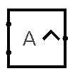

| Library: | Yosys Components |
| Introduced: | LogisimCL - 3.0.0 |
| Appearance: |  |
The Exponent component computes an integer power between two
multi-bit operands and emits the result on its output.
It is intended to emulate the behavior of the Yosys
$pow cell (operator **) so that
designs synthesized from SystemVerilog can be imported without
changing their arithmetic semantics.
The west side of the component has two inputs:
A, the base, and B, the exponent.
The east side has one output, Y, which carries the
value A ** B interpreted according to the selected
signedness mode.
All three ports share the same bit width, defined by the
Data Bits
attribute.
The computation is performed within this width; if the exact
mathematical result does not fit, the high-order bits are
discarded and only the least significant bits are kept,
matching the usual behavior of fixed-width arithmetic.
The Signedness
attribute controls how the operands are
interpreted:
When the exponent B is zero and the base is a
defined value, the output is 1 (with the
appropriate width). If the inputs contain undefined
(X) or floating (Z) bits that prevent
determining a consistent result, the output becomes
X.
Data Bitsattribute and its interpretation (signed/unsigned) depends on the
Signednesssetting.
Data Bits. Undefined or invalid values may produce an undefined (X) result.
A ** B, truncated
to the configured bit width.
Unsigned: all ports are treated as unsigned.
Signed: all ports are treated as two's-complement signed.
Auto-detect Signedness: the component selects a signed or unsigned interpretation in a way compatible with Yosys' internal rules.
Decide on pin(if present): the sign mode is chosen at simulation time based on an external input.
If pressed Alt + some number when selected, it changes the Data Bits value.
None.